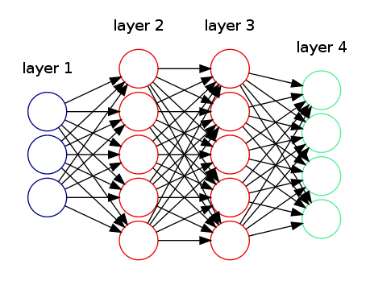

Draw a Neural Network through Graphviz
Preface
Graphviz is a language (called DOT) and a set of tools to automatically generate graphs. It is widely used by researchers to do visualizations in papers. Essentially, you just need to provide a textual descritption of the graph regarding its topological structure (i.e. what nodes are, how they are connected, etc) and Graphviz will figure out the layout of the image by itself. Usually, the generated layout works out well but quite often, like this post mentioned, can be a "finicky beast". So, I decide to share some tips I learned about Graphviz.
Specifically, in this post, I'll demonstrate how we can draw the Neural Network shown in the last post and use this as an example to show some tricks in Graphviz to tweak the layout 1. Let's get started!
Draw a neural network
If you do a quick search regarding "graphviz neural network example", you'll highly likely see the below picture:

This is probably the simplest Graphviz demonstration on Neural Network. The code for this picture can be obtained here.
However, when I'm preparing my last post, I'm not quite satisified with the example above. I want to clearly label all the nodes in all layers and make distinction among feature input, bias term, hidden units, and output units. So, I decide to draw one on my own.
Here is the code that generates the picture below 2. Let me briefly highlights some key points in the code:

rankdir = LR;
splines=false;
edge[style=invis];
rankdir=LRmakes the directed graphs drawn from left to right.splines=falsecontrols how the edges are represented and in this case, edges are drawn as line segments.edge[style=invis]forces edges to become invisible. This is a common trick to tweak graphviz layout.
{
node [shape=circle, color=yellow, style=filled, fillcolor=yellow];
x0 [label=<x<sub>0</sub>>];
a02 [label=<a<sub>0</sub><sup>(2)</sup>>];
a03 [label=<a<sub>0</sub><sup>(3)</sup>>];
}
node[...]sets the default node property: specify the node shape, node color. This node property will apply to three nodes:x0,a02,a03.x0 [label=<x<sub>0</sub>>]specify the text label for nodex0. The text for label is specified in HTML-like and this is how we write subscript and superscript in Graphviz.{...}specifies the scope of the node property. This code chunk as a whole shows how we can specify several nodes at the once with the same node property 3.
{
rank=same;
x0->x1->x2->x3;
}
rank=sameis another trick I'll talk about later. This specifies what "layer" (or "rank" by official term) a set of nodes belongs. You can read the official doc for the details.x0->...->x3specifies the relative position of the four nodes. Since the graph is arranged from left to right (indicate byrankdir = LR), then the "layer" is vertical. Then byx0->...->x3, the first node will bex0, followed byx1, and so on. Also, we haveedge[style=invis]and this will hide the edges among these four nodes. This is how we draw the NN layers.
a02->a03;
- This line is used to prevent tilting of the graph. As you can see, we specify
how the nodes should be arranged in a layer but we don't much constraint on how
the layers should be positioned except
rankdir=LR, which says layers should be ordered from left to right.a02->a03says layer witha02should be lined up with layer witha03.
l0 [shape=plaintext, label="layer 1 (input layer)"];
l0->x0;
{rank=same; l0;x0};
- This code chunk is how we add label text to each layer. As you can see we use
another node
l0with shapeplaintext, which saysl0is just a text message. Then we connect it with the first node of layer 1x0, which serves as attaching the text to the layer 1.
edge[style=solid, tailport=e, headport=w];
- We specify the edge style again. This will only affect the edges after this setup
not before. One small trick here is
tailport=e, headport=w. This will let all the edges point to the same position.
{x0; x1; x2; x3} -> {a12;a22;a32;a42;a52};
{a02;a12;a22;a32;a42;a52} -> {a13;a23;a33;a43;a53};
{a03;a13;a23;a33;a43;a53} -> {O1,O2,O3,O4};
- This code chunk is how we actually draw the edges. In the simple example above, it explicitly draws the edges between two nodes. It is quite pain to do. Above code chunk provides a simpler way to achieve the same purpose.
Graphviz tricks
From our NN drawing example, there are two recurring tricks when we tweak Graphviz picture layout:
- Invisible nodes/edges
- Rank constraints
Invisible nodes/edges
In the above example, we use invisible edges to specify the ordering of nodes within
each NN layer. In addition, we use node with plaintext shape to specify the text label
in the layer.
Usually, we use invisible edges to specify what nodes should line up and sometimes
we use invisible nodes to take up space to keep the graph in a specific structure.
This SO post
demonstrates how we can use invisible nodes and edges in combination to create
a fancy picture.
This SO post
is another example to show how to use "invisible edges" (it uses another trick called
group attribute).
Rank constraints
If you check official doc, here is what rank does:
Rank constraints on the nodes in a subgraph. If rank="same", all nodes are placed on the same rank. If rank="min", all nodes are placed on the minimum rank. If rank="source", all nodes are placed on the minimum rank, and the only nodes on the minimum rank belong to some subgraph whose rank attribute is "source" or "min". Analogous criteria hold for rank="max" and rank="sink". (Note: the minimum rank is topmost or leftmost, and the maximum rank is bottommost or rightmost.)
Let's demonstrate this description with a simple example 4:
digraph G
{
{rank=source; a->b;}
{rank=same; c->d;}
}
This example gives a graph with two rows. a->b is above c->d.
However, if I change {rank=source; a->b;} to {rank=min; a->b;}, we'll
end up with one row: a->b will be to the left of c->d. This is due to
the difference between min and source: min allows other subgraphs in the
minimum rank. However, source only allows other subgraphs of min or source
to be on the minimum rank (we have same in this case).
sink and max works similarly. For instance, the below example gives a picture
with c->d at the top and a->b at the bottom:
digraph G{
{rank=sink; a->b;}
{rank=same; c->d;}
}
-
Of course, Graphviz is not the only tool that can produce beautiful pictures. TikZ is another popular tool. You can check out its NN example for comparison. ↩
-
Technically, the code used to generate the blog NN picture is this one but the code I explained above is much more concise. ↩
-
Check out this SO post for more examples on grouping nodes with the same attributes. ↩
-
The example is adapted from this SO post. ↩